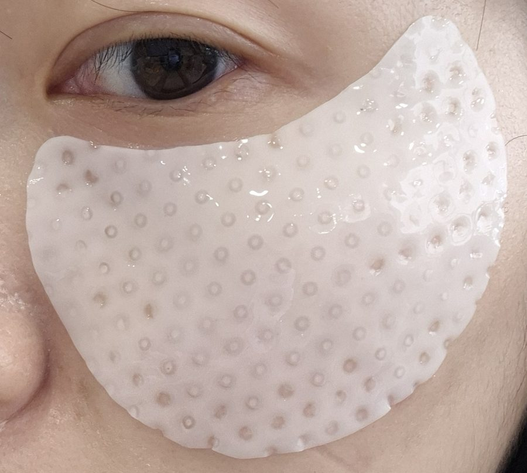
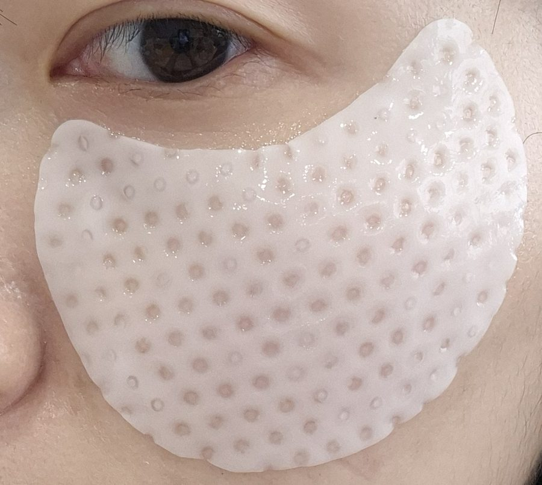
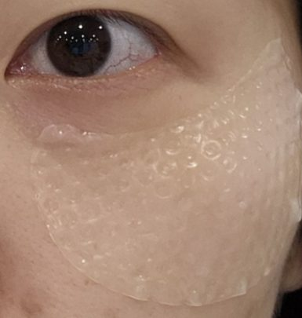

Press to seal: 170 patented embossed domes
- Korea's first embossed hydrogel patch
- Pressing the patch creates a vacuum seal that follows expression lines and facial contours
- Closer contact helps the nourishing actives absorb more deeply
- Color-change gel: the patch turns clear and thin as it absorbs, in about 1 to 1.5 hours (varies by person)


